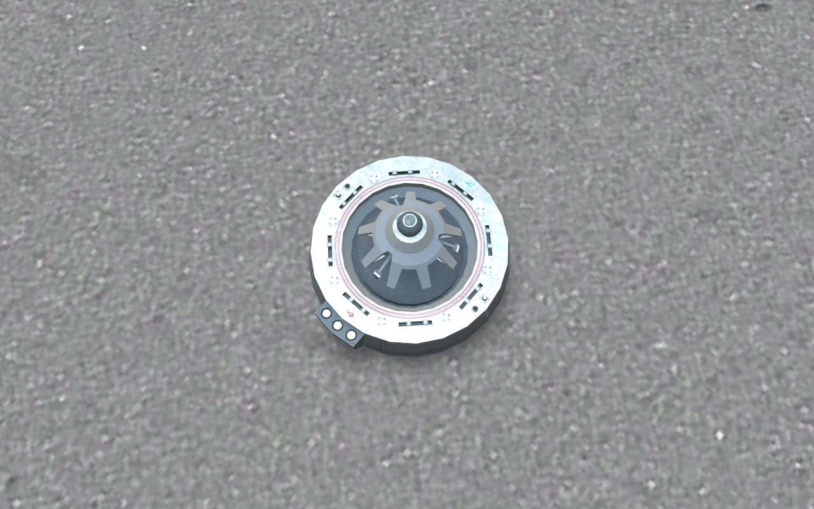
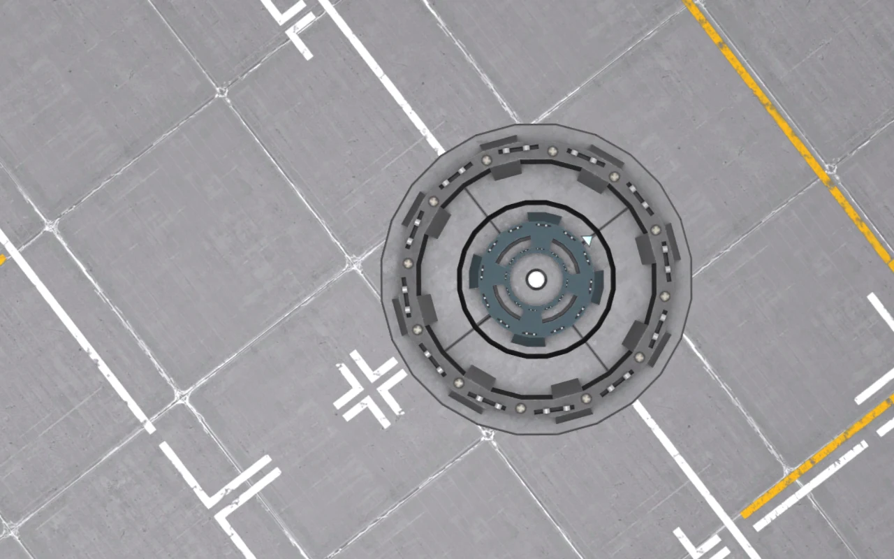
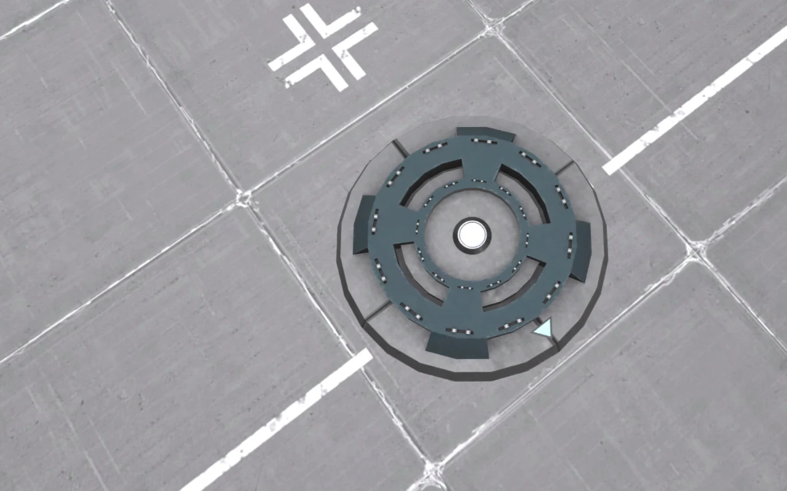
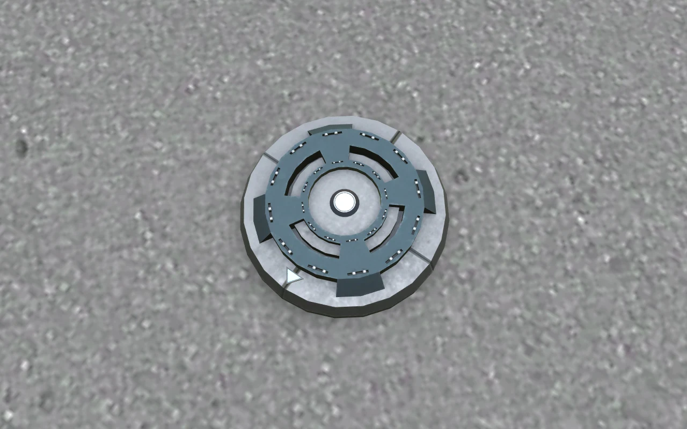

ShineFix home
← Back to supported mods
KipDockingPorts
Optics verified
Human tested
Version v1.0
Compatibility evidence
Original screenshot gallery
Parts
Non-androgynous docking port - Active

Universal Docking Port Large

Universal Docking Port Medium


Universal Docking Port X-Large